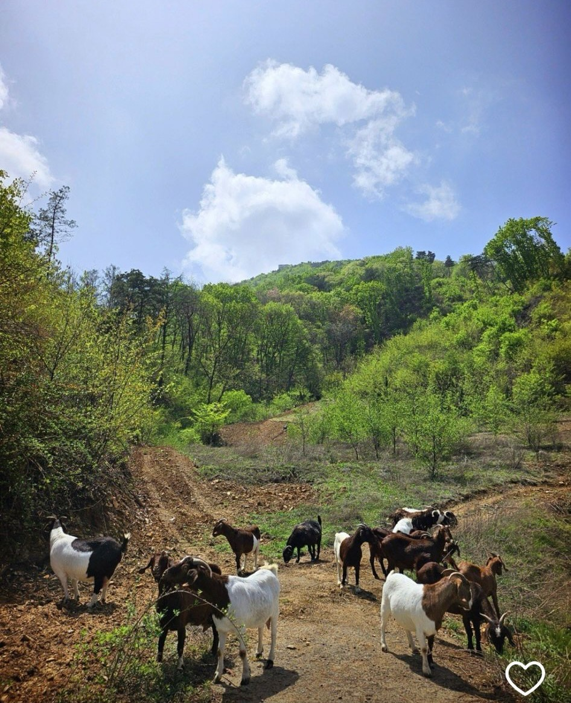

저희 야곱이네 염소 진액은 하늘이준 선물 인삼이 처음 발견된 진악산에서 자연 친화적 방법으로 사육한 염소와 엄선된 부재료로 정성껏 달인 진액입니다. Our extract is painstakingly stewed using carefully curated ingredients alongside premium free-range goats pasture-raised through natural, eco-friendly practices on Mount Jinaksan.
염소는 몸을 따뜻하게 하여 도움을 줍니다
Goat Supplements Warm Up the Body Systemically
직장인의 무기력, 피곤 · 기력이 떨어진 어르신 · 손발이 차가운 여성 · 임신준비, 출산 후 산모 회복 · 성장기 어린이, 청소년 · 추위를 많이 타시는 분
Modern workers facing fatigue or lethargy · Elderly dealing with weakened vitality · Women with cold extremities · Pregnancy preparation & postpartum recovery · Growing kids and adolescents · Those highly sensitive to cold weather

📸 실제 금산 진악산 농장 방목 현장 사진
📸 Untouched view of our herd on Mt. Jinaksan
염소의 핵심 성분인 아라키돈산은 세포재생과 노화방지, 뇌세포 발달에 효과적입니다.
Arachidonic acid, the primary bio-component of pasture goat extract, is highly effective for systematic cellular regeneration, anti-aging cellular defense, and brain cell developmental synthesis.
또한, 풍부한 불포화지방산으로 인슐린의 민감성을 개선해 혈당조절을 돕고 혈액생성 및 순환작용을 통해 당뇨는 물론 고혈압, 동맥경화, 각종 성인병 예방에 탁월합니다.
Additionally, its rich profile of unsaturated fatty acids improves insulin sensitivity to safely aid blood sugar regulation. It stimulates healthy blood cell production and fluid circulation dynamics, offering premium protection against diabetes, hypertension, arteriosclerosis, and adult onset chronic diseases.
• 총 120포 대용량 세트 구성 (1박스 60포 × 2박스) 제공.
• Large Volume Bundle: Total of 120 Pouches (2 boxes containing 60 pouches each).
* 부위별 주문 시 3kg 이상부터 전국 신선 택배 발송 가능
* Custom cut options require a minimum order of 3kg for shipment
❄️ 겨울철 진악산 눈밭 위를 뛰노는 흑염소들의 건강한 모습
❄️ Our healthy black goats running over snowy pastures on Mount Jinaksan
1. 냉장보관 하지 마시고 직사광선을 피해 서늘한 곳에 보관하세요.
1. Do not store in a refrigerator; preserve in a cool place protected from direct sunlight.
2. 진액이 뭉쳐 있을 때는 한약재의 전분성분 때문이니 안심하고 데워서 드세요.
2. Any settling or clumped liquid is due to natural starches from medicinal herbs—it is perfectly safe to heat and consume.
3. 전자렌지 이용시 전자렌지용 용기에 담아서 데워 주세요. (파우치 째 가열 금지)
3. When using a microwave, pour into a microwave-safe container first. Never place the original pouch directly into the unit.
📍 주소: 충남 금산군 금산읍 진악로 672-22Address: 672-22 Jinak-ro, Geumsan-eup, Geumsan-gun, Chungnam
☎️ 전화번호: 041-754-8255
※ 저희 주소지는 진악산골프클럽 바로 옆 건물에 나란히 자리잡고 있습니다. 찾아오실 때 참고하시기 바랍니다.
※ Our facility stands right next to the Jinaksan Golf Club complex. Please look for local golf club road indicators when navigating to us.
네이버 지도 / 티맵 통합 등록 주소
Naver Map Navigation Address
충청남도 금산군 금산읍 진악로 672-22 (야곱이네 염소)